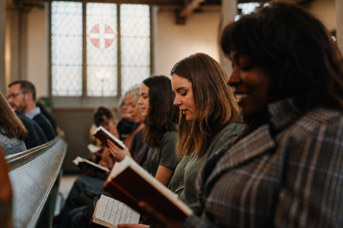

Brand Guidelines
The reference for how the circuit's own identity, mark, colour, type, voice and photography, should look and read wherever it turns up. Not a website style sheet: this covers every surface the circuit itself puts its name on, digital and physical, from the website to a printed noticeboard.
The Idea
01 · PositionTen churches that had ten front doors. Now there is one.
Forest Circuit is not a single congregation and this identity does not pretend otherwise. It is a team ministry of ten churches, each with its own building, its own history and its own Sunday. What the identity does is give them one recognisable way of speaking, so that a visitor who finds Leytonstone and a visitor who finds Loughton know they have arrived at the same organisation.
Every decision in this document follows from that: the mark is a circle left deliberately open, the palette is warm rather than corporate, the voice invites rather than notifies, and the churches are painted rather than photographed for the warmth that brings, letting ten very different buildings sit together on one page.
One circuit, ten doors
The circuit is the parent organisation, not a rebrand authority. This identity belongs to what the circuit itself produces; individual churches are free to run their own name and their own communications alongside it.
Warm, not corporate
Rounded type, cream grounds, hand-drawn edges. If a choice reads as a bank or a council, it is the wrong choice.
Invite, don't notify
The default register is an open door, not a list of conditions. Rules exist, but they are never the first thing said.
Legible before beautiful
Contrast, minimum sizes and clear space are stated as numbers in this book. Where the two conflict, legibility wins.
The Mark
02 · LogoA single continuous line: the letters "fm" for Forest Methodist, drawn in one stroke inside an almost-closed circle. That outer ring does double duty: it reads as a "C" for Circuit as well as the circuit itself, and its small opening is deliberate, since a circuit is not a closed loop.
Keep a margin at least as wide as the circle's own radius clear on every side, no text, no edge of a page, no other logo inside that ring. On a crowded noticeboard or a busy social post, give it more room if you can spare it, not less.
When the mark sits next to a church's own noticeboard, a hired venue's signage, or the wider Methodist Church, give both marks equal visual weight and the same clear space either logo is entitled to on its own; a simple vertical rule or equivalent gap between the two is enough to separate them. Never place the circuit mark inside another organisation's lockup or resize it smaller than a logo it's paired with.
Colour
03 · PaletteForest green carries the brand; orange is used sparingly as a single accent. Cream and white are the only page grounds; the palette never runs on a dark background except the footer and the reversed mark.
Every pairing the palette actually uses, measured against WCAG 2.1. "Body" is the 4.5:1 threshold for normal text; "Large" is 3:1 for text at 24px or 19px bold and above. A pairing that fails is not a matter of taste.
| Pairing | Where it is used | Ratio | Body | Large |
|---|---|---|---|---|
| Ink 900 | Headings on the page | 13.96 | AAA | AAA |
| Ink 600 | Body text on the page | 6.91 | AA | AAA |
| Ink 400 | Muted / caption text | 3.47 | Fails | AA |
| Forest 700 | Links and inline accents | 5.05 | AA | AAA |
| Orange 500 | Orange as text: never do this | 2.50 | Fails | Fails |
| White | Primary button label | 5.36 | AA | AAA |
| Ink 900 | Badge label on orange | 5.59 | AA | AAA |
| Cream 50 | Footer and worship slides | 13.96 | AAA | AAA |
| Orange 500 | Eyebrow label on a dark slide | 5.59 | AA | AAA |
Type
04 · TypographyTwo faces, both free on Google Fonts. Baloo 2 carries every heading, rounded and warm, never used smaller than about 18px. Instrument Sans handles everything you read in a paragraph.
-apple-system, "Segoe UI", Arial, sans-serif.
For Word, PowerPoint or Canva documents where neither face is installed, use Arial or Calibri for body copy
and keep headings bold rather than trying to substitute a lookalike rounded font.
Voice
05 · ToneWarm and direct, never a facilities notice. Written like someone genuinely inviting you in, not like copy generated to fill a section.
"We warmly invite you to join us."
"Find a church near you."
"Limited parking is available on-site."
"Please note the following facilities apply."
Three rewrites, taken from copy that has actually appeared on the circuit's own pages. In every case the facts are unchanged; only the order and the register move.
Sentence case, always
"Find a church near you", never "Find A Church Near You". Headings, buttons and nav all follow this; only the small uppercase eyebrow labels are an exception.
Ampersands in headings
"News & community stories", "Events & community groups". In running body copy, write "and".
Short nav, fuller heading
The nav says "Venue hire"; the page it opens says "Hall & premises hire". The label has to fit a menu, the heading has room to explain.
Say "circuit"
Ten churches form a circuit, not a parish or a diocese. It is the word the organisation is actually built on, so it should not be softened away.
Imagery
06 · Two LanesThe circuit uses two distinct image treatments, and which one you reach for depends on what is being pictured, not on what happens to be available. Watercolour is used in place of photography for buildings and people to bring a warmth photography doesn't reach on its own; news and events, where the moment itself is the point, are photographed.
Churches, and portraits of the team
Loose ink linework under transparent washes, with the white of the paper left showing through rather than painted over. Colour is saturated but airy, edges are soft, and small blooms and runs are kept rather than tidied away. Each of the ten churches already has one.
Staff headshots follow this same treatment rather than photography. That keeps the team visually of a piece with the buildings they serve, sidesteps the awkward mix of ten differently-lit phone snaps, and means nobody is asked to sit for a photograph they would rather not.

Life as it actually happens
Natural light, candid moments mid-service or mid-conversation, genuine expressions. Framed wide enough to show the space and the people in it together. Real congregations wherever possible.
Avoid heavy filters or colour grading that fight the forest green and orange palette, and posed straight-to-camera lineups. Stock photography is fine when a real congregation shot isn't available, but it has to be chosen and, where needed, edited carefully: the homepage hero is a stock image brought in line with this palette, not a generic photo library shot dropped in as-is.
A watercolour church behind a photographed person (or the reverse) reads as a mistake. If a layout needs both a place and a person in the same image, paint both or photograph both.
Social avatars, the circuit mark, and the staff headshots are all circular. Leave generous headroom above and either side. Faces cropped tight against the edge of a circle read as cut off in a way they don't in a square or rectangle, and a watercolour's soft outer edge needs a little more room still, since the wash fades rather than stopping at a hard line.
Layout
07 · Grid & SpaceOne spacing scale, one type scale, one measure. Everything the circuit produces should be built from these numbers rather than from whatever looked about right, because consistent spacing is most of what makes unrelated pages feel like one organisation.
A 4px base, doubling loosely. Use a step from this scale for every margin, padding and gap. Steps 1–4 space things within a component; 5–7 separate components; 8–10 separate whole sections.
| Role | Size | Face & weight | Used for |
|---|---|---|---|
| Hero | 40–72px | Baloo 2 700 | Home page opening statement only |
| H1 | 48px | Baloo 2 700 | One per page, the page's own title |
| H2 | 34px | Baloo 2 700 | Major section headings |
| H3 | 22px | Baloo 2 700 | Card titles, sub-sections |
| Lead | 19px | Instrument Sans 400 | The standfirst under a page title |
| Body | 16px | Instrument Sans 400 | Everything a reader reads at length |
| Small | 14px | Instrument Sans 400 | Secondary detail, list meta |
| Caption | 12.5px | Instrument Sans 400 | Image credits, fine print |
| Eyebrow | 16px | Baloo 2 800, uppercase | The small label above a heading |
Running text sits between 60 and 70 characters a line. This paragraph is set at that measure so you can see it. Wider than about 75 and the eye loses its place returning to the left edge; much narrower and the text starts to fragment. On a wide screen this means body copy does not fill the window; that empty space to the right is doing a job.
Twelve columns, 24px gutters, 1400px maximum width. Most content sits in a narrower column than the grid allows: directory listings run to eight columns, running text to six or seven.
Three radii, no others
4px for inputs and small chips, 10px for cards, 20px for large feature panels, and a full pill for buttons and badges. Nothing in between.
Two shadow families
A soft ambient shadow for cards that sit on the page, and the hard 4px offset for the sticker treatment. Never both on one element.
Applied Style
08 · Digital ComponentsThe site's chunky, hand-drawn feel comes from one recurring device: a 2px ink border with a hard, unblurred offset shadow, never a soft drop shadow. This is a digital signature for buttons, badges and cards; print materials use the flatter letterhead style shown in the next section instead.
Beyond the Website
09 · Every Other SurfaceEvery place this identity needs to travel: email, print, social media, worship slides, physical signage and merchandise. Most of these fall back to system fonts and flatter, simpler shapes than the website uses, since none of them can be trusted to load a custom typeface or render a hard offset shadow correctly.
<tr><td style="padding-right:16px">
<img src="[hosted logo-green.png]" width="48">
</td><td>
<div style="font-weight:700;font-size:15px;color:#1c2b22">Jane Smith</div>
<div style="color:#4a5a4f">Circuit Administrator</div>
<div style="font-weight:700;color:#1b7a46;margin-top:8px">Forest Methodist Circuit</div>
<div style="color:#4a5a4f">office@forestcircuit.org.uk · forestcircuit.co.uk</div>
</td></tr></table>
Paste this into Gmail/Outlook's signature HTML editor once the logo is hosted somewhere with a stable URL, e.g. forestcircuit.co.uk/images/logo-green.png.
forestcircuit.co.uk · A registered charity
The mark sits top-left in forest green with the circuit's name beside it, on white or cream stock; never the reversed white mark on paper. A single orange rule closes that header block and is the only colour accent on the page. Body copy in Instrument Sans, or Arial where the font isn't installed. The footer carries contact details and the charity line above a hairline rule.
A church version of the same template swaps the circuit name for the church's own and reads "Part of Forest Methodist Circuit" underneath, with the church's address in the footer. Ready-made Word templates and print-ready PDFs already exist for the circuit and for each church, so this layout should not need rebuilding by hand.
Avatar: reversed mark centred on solid Forest 700, with the same clear space rule as everywhere else, since most platforms crop avatars into a circle themselves, so don't pre-crop tightly. Cover images use the mark small and left- or right-anchored, never stretched across the full width.
Ink 900 background, cream text, Baloo 2 for titles only, since it needs to read from the back of a hall. Orange is a poor text colour on a dark ground; keep it to a small eyebrow label or underline, never a full line of lyrics.
Reversed mark on forest green is the most weatherproof combination outdoors, high contrast, and forgiving of a modest print run. Check the mark is legible from ordinary pavement distance, not just up close, before a banner goes to print.
For t-shirts, tote bags or pens at youth and community events, use a single-colour reproduction of the mark, ink or white depending on the garment, rather than the full palette. Multi-colour printing is usually the most expensive part of a small merchandise run, and the mark was designed as a single continuous line specifically so it survives being reduced to one colour.
Files
10 · Assets on File
Everything below already exists in the website's codebase (public/images/ and public/fonts/) and can be pulled directly from there.
| File | What it is | Use for |
|---|---|---|
| logo-ink.png | Mark, ink on transparent | Anything on a light background |
| logo-white.png | Mark, white on transparent | Anything on forest green or a dark ground |
| logo-green.png | Mark, forest green (#1b7a46) on transparent | Email signatures on a white background only |
| og-share.png | 1200×630 share card, white mark on forest green | Social link previews |
| icon.png / favicon.ico | White mark on forest green, browser-tab sized | Browser tabs, app icons |
| Baloo2-Variable.woff2 | Variable weight 600–800 | Web headings only |
| InstrumentSans-Variable.woff2 | Variable weight 400–700 | Web body text only |
| fmc-logo-motion.mp4 / .gif / -transparent.webm | The mark drawing itself on, 2s loop | Video intros, presentation openers, social |
| wanstead.jpg, loughton.jpg, … | Watercolour illustration, one per church (ten in total) | Church pages, print, anywhere a building is shown |
| hero-map.png | Watercolour map of the circuit's ten churches | Homepage, print overview of the circuit |
| forest-circuit-letterhead.docx | A4 letterhead, Word template plus a print-ready PDF | Circuit correspondence |
| wanstead-letterhead.docx, … | The same template per church, one for each of the ten | A church's own correspondence, if it chooses to use it |
| david-bishop.html, … | Email signature, one per member of staff | Pasting into Gmail or Outlook |
Keeping This Current
11 · OwnershipA brand guide only works if someone keeps it true. This one lives as a private link, not a printed binder, so it's simple to correct the moment something changes.
One named role, not necessarily one named person, is responsible for approving anything that deviates from this guide: a new colour, a redrawn mark, a tagline change.
Anyone producing something official on the circuit's behalf, a poster, a pull-up banner, a merchandise order, should be pointed to this document before it goes to print, not after.
When the website's own design tokens change, this document should change with them: it's compiled from the same colours, fonts and logo files the site itself uses, so the two should never drift apart.